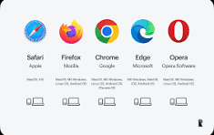

WWW(World Wide Web)
The World Wide Web (WWW) is a system of interlinked web pages that people can access through the Internet. It was invented by Tim Berners-Lee in 1989 to help share information easily around the world. The WWW contains many websites that include text, images, videos, and links. People use web browsers such as Google Chrome and Mozilla Firefox to open and view web pages. Each website has its own unique address called a URL. The World Wide Web has become an important tool for communication, education, research, and entertainment. Today, millions of people use the WWW every day to find and share information.
Uses Of WWW
- Search information on the internet
- Communicate with people around the world
- Learn and study online
- Shop and do business online
Browser
A web browser is a software used to access and view websites on the internet. It helps users search for information on the World Wide Web. With a browser, people can read articles, watch videos, and download files. It also allows users to open different web pages by typing a website address. Some common browsers are Google Chrome, Mozilla Firefox, and Microsoft Edge. Browsers make using the internet easy and fast.

Key features of browser
- Bookmarks: Save important websites so you can visit them quickly later
- Tabs: Open and view multiple web pages in one browser window
- Extensions: Add extra tools or features to improve the browser
- Private Browsing: Browse the internet without saving history or cookies
- Synchronization: Sync bookmarks, history, and settings across different devices
Search Engine
A search engine is a program that helps users find information on the internet. It works by searching different websites for the words or questions typed by the user. The search engine then shows a list of related web pages as results. People use search engines to learn, research, and find answers quickly. Popular search engines include Google Search, Bing, and Yahoo! Search.
How to use search engine
- Open a web browser such as Chrome or Firefox.
- Go to a search engine like Google Search.
- Type keywords or a question in the search box.
- Press Enter and click a result to get the needed information.
URL(Uniform Resource Locator)
- URL stands for Uniform Resource Locator.
- It is the address of a website on the internet.
- A URL tells the browser where to find a web page.
- URLs usually start with http:// or https:// for secure sites.
Social Media
Introduction to Social Media
Social media refers to online platforms where people can create, share, and exchange information, ideas, photos, and videos. It helps people communicate with friends, family, and communities across the world. Popular social media platforms include Facebook, Instagram, Twitter, and YouTube. It allows users to express their opinions and stay updated with current events. When used responsibly, social media can be a powerful tool for communication and learning.
Appropriate Usage of Social Media
Social Media for Educational Purposes
How to Access Websites Safely
Introduction to Video Conferencing Tools
Video conferencing tools are online applications that allow people to communicate through video and audio over the internet. They are widely used for online meetings, virtual classes, and business discussions. Popular video conferencing tools include Zoom, Google Meet, and Microsoft Teams. These tools allow people from different locations to interact in real time. They are especially useful for remote learning and communication.
Advantages of Video Conferencing